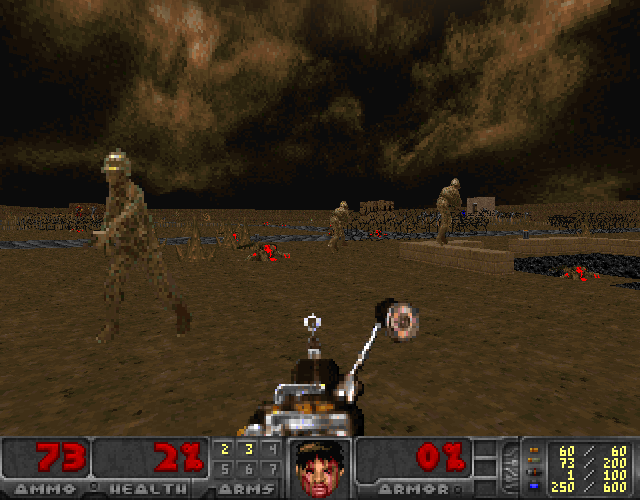

<!DOCTYPE html>
<html>
<title>Marine Doom | Doom: Rediscovering History</title>
	<meta charset="utf-8">
	<meta content="OWLY.FANS" property="og:title" />
	<meta content="Because Sometimes Doom is just bad" property="og:description" />
	<meta property="og:image" content="https://owly.fans/floppy.png">
	<meta content="#9B4F96" data-react-helmet="true" name="theme-color" />
    <meta name="keywords" content="owly, cass python, neocities, neozones, brit, uk, archive, site ran by a stud, england, wales">
	<link rel="shortcut icon" type="image/x-icon" href="../../../favicon.ico">
    <link rel="stylesheet" href="../../style.css">
    </html>
	    <body><p><a href="../">Back to index</a></p>
		<h1>Marine Doom</h1>
			<p></p>
			<hr>
			<p></p>
			<em>Cass &#xAB;Owly&#xBB; Python, 2023-01-29. Published 2024-02-10.</em>
<p>Despite going to college way after the release of the game in the mid-2010s, I still fondly remember wasting hours of my free time playing Doom, as well as playing <em>many</em> WADs (my personal favorite at the time was <a href="https://www.doomworld.com/idgames/levels/doom2/Ports/s-u/shrooms"><em>Shrooms</em> by Albertoni</a>), in the computer labs, not doing the work I was given (hey, I still got all the grades I was looking for!).</p>


			<p><figure>
        <center><a href="marine1_large.png"></a></center>
				<figcaption><p>Not trying to be funny... but is this real? I think this is real.</p>
		</figcaption>
		</figure></p>
<p>Looking back, this did not make me all that unique - people have been trying to get out of doing their work for years now, hell, when I was at school, children would try and play games like <a href="https://en.wikipedia.org/wiki/Happy_Wheels">Happy Wheels</a>, and of course, the classic: <a href="https://en.wikipedia.org/wiki/Cool_Math_Games">Cool Math Games</a>, holy be thy name. Seemly the boys at <a href="https://doomwiki.org/wiki/Id_Software">id Software</a> knew about the upcoming trouble that their game would cause - for a press release on New Year's day 1993, id made the very bold statement that they expected Doom would &#xAB;be the number one cause of decreased productivity in businesses around the world&#xBB;. Only a company full of <a href="https://doomwiki.org/wiki/Adrian_Carmack">Adrian Carmacks</a>, <a href="https://doomwiki.org/wiki/John_Carmack">John Carmacks</a> (no relationship), and <a href="https://doomwiki.org/wiki/John_Romero">John Romeros</a> could ever come out with something so in-your-face as that. But, as it turns out, this might not have been all that far from the truth.</p>
			
			<p>Of course, it is more than possible for work and gaming to go hand-in-hand - for example, Doom itself has been used in the art world a few times; in 2018 I talked about just that with two mods for the game, <a href="https://owlman.neocities.org/library/dtr/ars_r.html">Ars Doom</a>, where you get to walk around in a recreation of a museum and <a href="https://owlman.neocities.org/library/dtr/kewk.html">Kill 'Em With Kindness</a>, a 2017 WAD where you get to take care of your little cartoon dog in a very cute hand-drawn garden made for a class hosted by Patrick LeMieux.</p>

			<p><yell>!!Epic segway part!!</yell></p>
			
			<p>Despite Doom having a somewhat controversial vibe to it, the game would eventually end up in the hands of the US Marine Corps in 1995 as a way to train teams with the abilities like «Military Thinking and Decision-Making Exercises».</p>

<p>The game has been modified to replace the usual suspects, that being the demons DoomGuy usually fights, to now include humans that are apart of an army that you are fighting, as well as this, the level is now set in a sand desert-like environment with small houses ploped around the place that you can enter.</p>

<p>The game itself is hard. Very hard. You are spawned in with only 20 HP, making you very vulnerable to your foes. Personally, I feel like the best option is to try and get the opposing NPCs to in-flight by running out of the starting area (a small building that has a number of weapons) and strafe to my heart's content. I'm not really sure if this was how the game was designed, but there you go.</p>

<p>Most of what I've written here is all subjective, but I'm not really sure if this holds up as a good military simulation and I feel like if someone were to play this WAS with no context to why it was made, they'd probably think it was a very middle of the road mod. While I've certainly not played that many simulations, one game that I feel like has aged well would be 2001's <em><a href="https://en.wikipedia.org/wiki/Tom_Clancy%27s_Ghost_Recon_(2001_video_game)">Ghost Recon</a></em>, a somewhat admittedly slow game, but is one that is ultimately fun to play with people and forces you to act wisely, making you think about every step you take. You're very much of a glass cannon in this game, but that's why it's a lot of fun.</p>

			<p>Overall, <a href="https://doomwiki.org/wiki/Marine_Doom">Marine Doom</a> is a bit of an oddity from the 1990s that, while can be a fun challenge, is something that you're realistically only going to play once, if that.</p>

<p>Okay everyone, let's all stand up and salute our brave US soldiers. God bless the US of A. Goodnight, American!</p>
			
			
			<ul>
	<li><a href="https://www.doomworld.com/idgames/themes/marines/marine1">/idgames archive</a></li>
	<li><a href="https://archive.org/details/marine1">Internet Archive</a></li>
	<li><a href="marine1.zip">Local copy</a></li>
</ul> 
			<p>Also see:</p>
			<ul>
	<li><a href="https://owlman.neocities.org/library/dtr/marine1.html">My very old other review for this mod</a></li>
</ul> 
			
			
<p></p>
	<hr>	
<p><strong>Want to support OwlyFans? <a href="/nft/">See our NFTs</a>!</strong>
</p>

	
	<p>Copyright 2024 - <script type="text/javascript">
var today = new Date()
var year = today.getFullYear()
document.write(year)
</script> by Cass &#xAB;Owly&#xBB; Python, licensed under the <a href="../../../license/fopl-mdp-v2" title="The Freedom Owl Public License: Modifications, Distributions, and Private Use Version 2" alt="The Freedom Owl Public License: Modifications, Distributions, and Private Use Version 2">FOPL-MDP V.2</a>. Please see <a href="../../../humans.html">humans.html</a> for full credit and thanks. Peace and love.</p>
<p><font color="black"><center>&#x2605;</center></font></p>
<p>
<div style="text-align:right">
<a href="http://bytemoth.nfshost.com/cd5k-net/tau">&tau;</a>
</p>
</div>
<p></p>
	<script src="../../../ruffle/ruffle.js"></script>
<script src="../../../script.js"></script>
    </body>
</html>